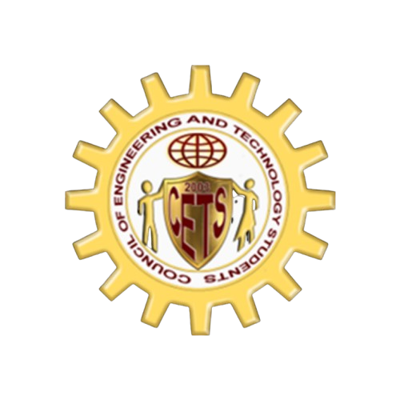
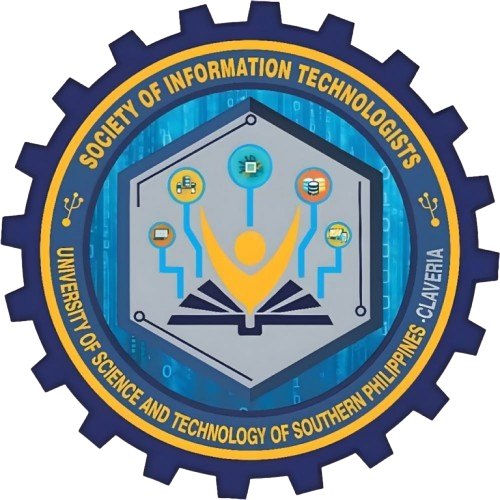
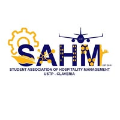
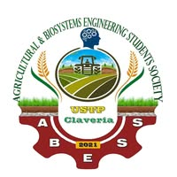
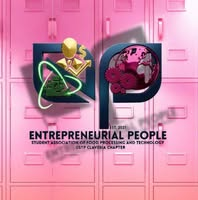
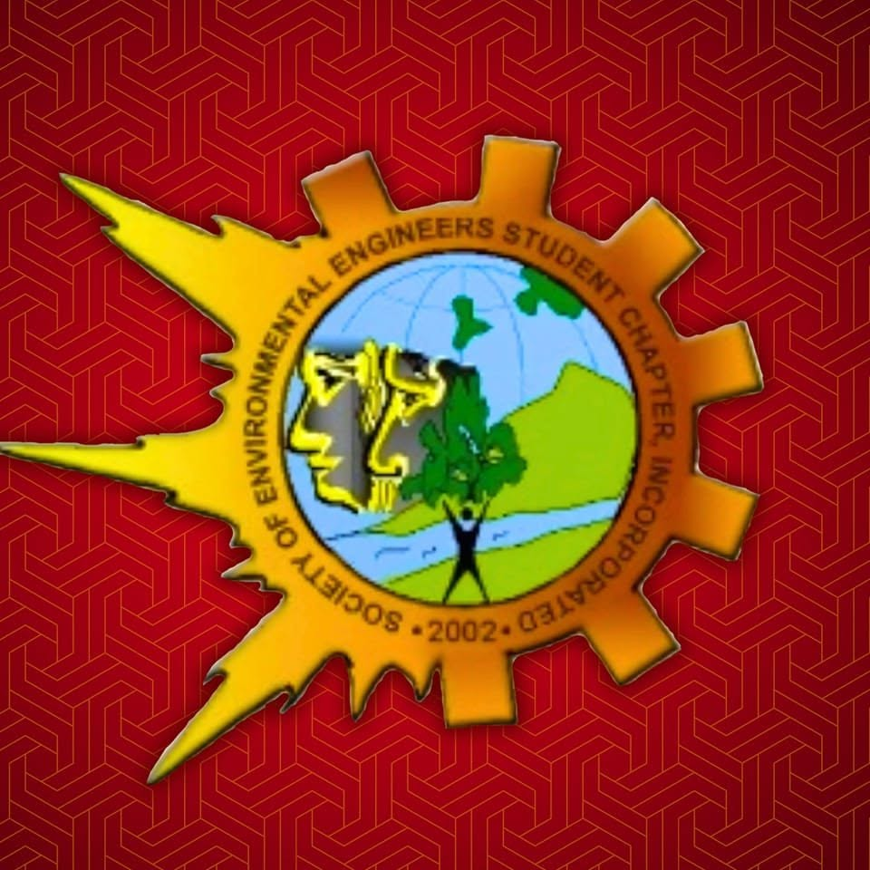
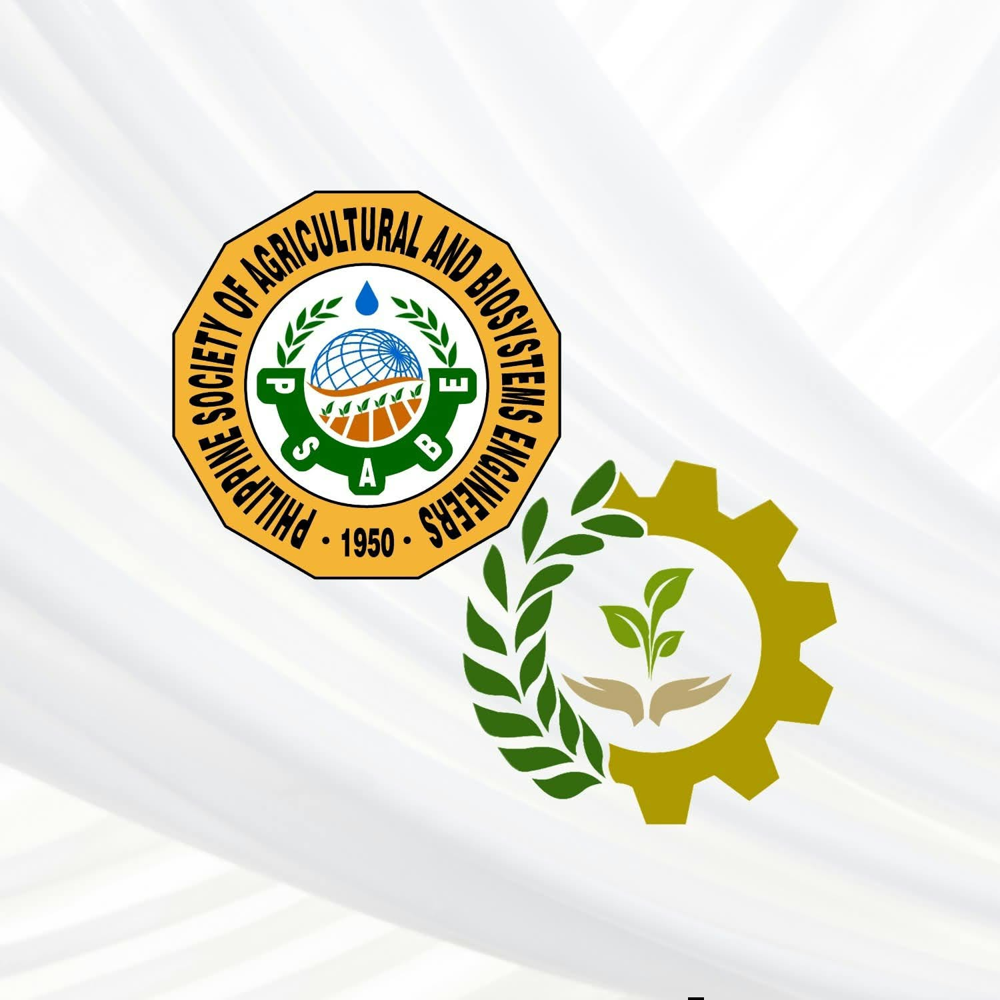

The Council of Engineering and Technology Students (CETS) is a college-based student organization at the University of Science and Technology of Southern Philippines–Claveria Campus, located in Claveria, Misamis Oriental.
Its leadership history extends to at least academic year 2013–2014, during the institution’s earlier years as the Misamis Oriental State College of Agriculture and Technology (MOSCAT), before the establishment of USTP in 2016.
Among its former presidents is Engr. Val Irvin F. Mabayo, who served as council secretary in 2013–2014 and president in 2016–2017, subsequently becoming a council adviser beginning in 2017. Its more recent leadership includes Ronen Samforna, who served as CETS President for academic year 2025–2026 and as CETS Secretary and Junior Adviser for academic year 2026–2027.
Other former officers include Rowenelle Doblas, who served as secretary in 2021–2022 and external vice president in 2022–2023.
CETS belongs to a multidisciplinary academic community encompassing the College of Engineering and Technology’s five departments: Agricultural and Biosystems Engineering, Environmental Engineering, Food Processing and Technology, Hospitality Management, and Information Technology.
These departments bring together students preparing for careers in agricultural systems, environmental protection, food production and processing, hospitality services, and digital technology.
The college emphasizes the application of science and technology to product development, industrial processes, environmental management, and services that benefit society.
Within this academic setting, the council’s broader role can be understood as providing a platform for student representation, leadership development, cooperation across programs, and participation in college affairs.
This includes creating opportunities for students to express their concerns, develop organizational skills, and work together toward shared academic and community interests.
Such a role fits within USTP’s wider commitment to developing student leaders and encouraging collaboration and service. The university’s values of unselfish dedication, social responsiveness, transformational leadership, and prudence provide an institutional framework for responsible leadership, ethical decision-making, teamwork, and thoughtful management of resources. Its educational vision connects learning with economic development, while its mission emphasizes industry-relevant education and technological contributions to national needs, including food security and energy sufficiency.
Organizational Chart

CETS
Council of Engineering and Technology Students
Sub Organizations

SocITech
Society of Information Technologists

SAHM
Student Association of Hospitality Management

ABESS
Agricultural and Biosystems Engineering Students Society

EntrePle
Entrepreneurial People Student Association of Food Processing and Technology

SEESCI
Society if Environmental Engineers Students Chapter Incorporated

PPG
Philippine Society of Agricultural and Biosystems Engineers - Pre-Professional Group
Announcements and Updates

Awarding of Certificate to Accredited Student Organization
October 7 2026
The Awarding of Certificates to Accredited Student Organizations marks an important milestone in recognizing student organizations that have successfully fulfilled the requirements for official accreditation at USTP Claveria.
During this occasion, the Council of Engineering and Technology Students (CETS) was officially recognized as an accredited student organization and received its certificate of accreditation.
This achievement signifies the council's commitment to responsible leadership, effective organization, and active participation in promoting student welfare and development. With its official accreditation, CETS is further empowered to carry out its objectives, implement meaningful programs and activities, and continue serving the students of the College of Engineering and Technology with dedication, integrity, and excellence.

CETS General Assembly
October 29 2026
The Council of Engineering and Technology Students (CETS) General Assembly served as an important gathering for students of the College of Engineering and Technology at USTP Claveria to come together, strengthen unity, and stay informed about the council's plans, programs, and initiatives for the academic year.
The event provided an opportunity to introduce the newly elected CETS officers, present their goals and proposed activities, discuss important announcements, and encourage active student participation in the organization's endeavors. Through open communication and collaboration, the General Assembly aimed to strengthen the relationship between the student council and the student body while fostering a sense of responsibility, cooperation, and belonging within the CETS community.
Overall, the assembly marked a meaningful step toward a more engaged, united, and progressive academic year.